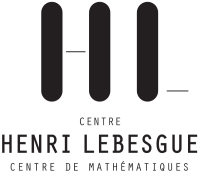

The focus of the spring school is on the theme of singularities, specifically in low-dimensional and symplectic topology. It is aimed at Master and PhD students; the format is that of two mini-courses, accompanied by one exercise session each, as well as short talks by the participants.
The two minicourses will be ensured by Anne Pichon and by Jonny Evans. Exercise sessions will be ensured by Yenni Cherik and Matthew Buck. (See below for titles and abstracts.)
All lectures take place at the campus "Lombarderie/Michelet" of the University of Nantes, in the Room 111 at the bottom floor of Building 26. Here is the approximate address of the building, and here is a detailed plan of the campus to precisely locate it. Lunches will be at the university cafeteria. The social dinner will take place at the restaurant Plan B, at 29 Rue Fouré, 44000 Nantes.
| Tuesday | Wednesday | Thursday | Friday | |
|---|---|---|---|---|
| 9:15 - 10:15 | Evans 1 | Pichon 3 | Evans 3 | |
| 10:15 - 10:45 | Registration | Coffee break | Coffee break | Coffee break |
| 10:45 - 11:45 | Pichon 1 | Evans 2 | Pichon 4 | Evans 4 |
| 12:00 - 14:00 | Lunch | Lunch | Lunch | Lunch |
| 14:00 - 15:30 |
Anne Pichon
Short talk 1
|
Exercise session | Exercise session | |
| 15:30 - 16:00 | Coffee break | Coffee break | Coffee break | |
| 16:00 - 17:00 |
Short talk 2
|
Short talks 3 & 4 | Colloquium | |
| 17:00 - 19:30 | ||||
| 19:30 - 22:30 | Dinner |
Available here.
Lunch at the university cafeteria, coffee breaks as well as a collective dinner will be covered for all participants. We also have enough funds to cover the accommodation (in student twin bedrooms) of up to twenty participants; please indicate in the registration form in case you would like to apply for such funding.
Nantes has an international airport and a train station that is well connected to Paris. (Note that Google Maps might not have accurate data on local transportation within Nantes; you can look up itineraries on the Naolib webpage.) Whereas the train station is located right in the city center, the airport is further away, and there are two options to get back to civilization from there.
The registrations are now closed.
Available here.
Fabio Gironella, Marco Golla and Stéphane Guillermou. For any questions, you can send us an email at the following address: orga-school-sing (at) univ-nantes.fr.
We acknowledge support from: Laboratoire de Mathématiques Jean Leray, Centre Henri Legesgue, Fédération de Recherche Henri Lebesgue, Région Pays de la Loire, Réseau thématique "Topologie Algébrique et Géométrique", and Réseau Thématique "Géométrie Algébrique et Singularités".
